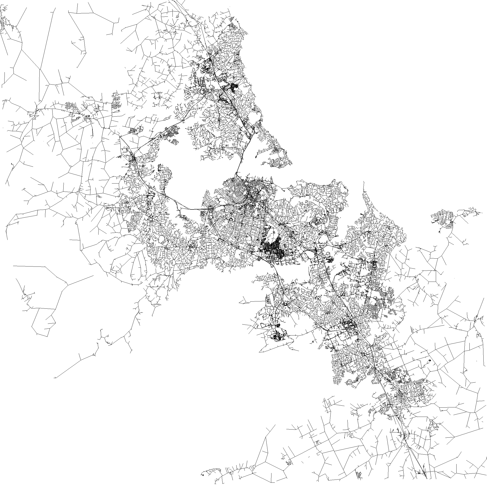
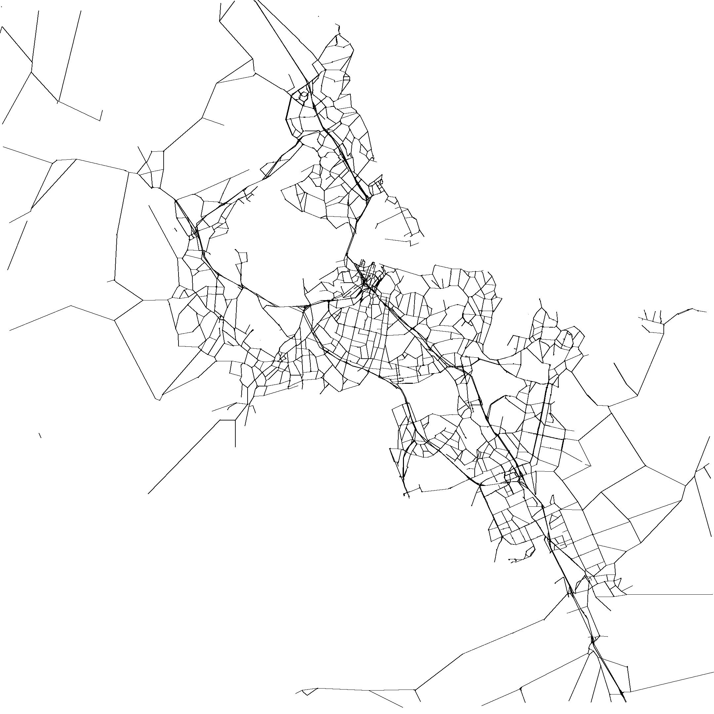
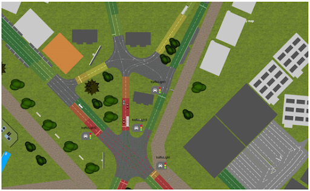
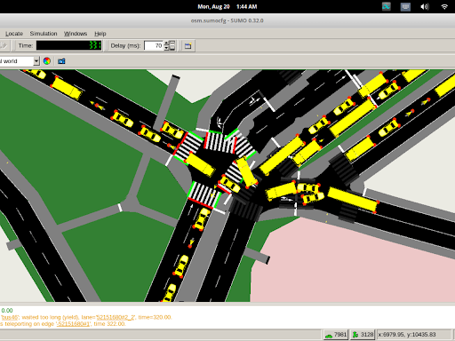

Intro
Preprocessing
 (a) 329816 vertices, 83504 edges
 (b) 7744 vertices, 11648 edges
Conclusion
Things we wanted to do
Prove sub-optimal convergence
Apply perturbation theory
Apply traffic density

Things we wanted to do...
Add a cost variable with different measuring techniques
Adapt the 2 player game to run an AI-based evolutionary algorithm off of it

Questions?